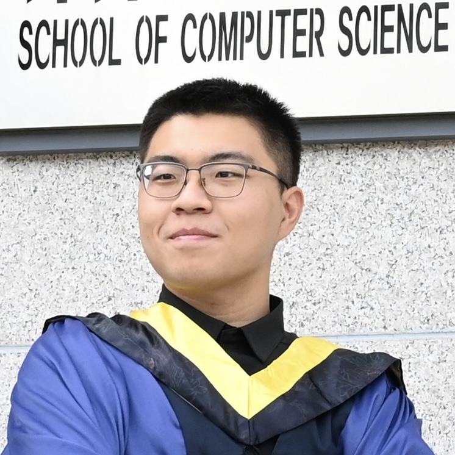

CPS: Medium: Collaborative Research: Robust Sensing and Learning for Autonomous Driving Against Perceptual Illusion
Duration: 7/1/2023-6/30/2026
Welcome to the web page of our research project: "CPS: Medium: Collaborative Research: Robust Sensing and Learning for Autonomous Driving Against Perceptual Illusion". This website is created and maintained to disseminate and share research results and other information related to the project.
Project Description
Autonomous driving is on the verge of revolutionizing the transportation system and significantly improving the well-being of people. An autonomous vehicle relies on multiple sensors and AI algorithms to facilitate sensing and perception for navigating the world. As the automotive industry primarily focuses on increasing autonomy levels and enhancing perception performance in mainly benign environments, the security and safety of perception technologies against physical attacks have yet to be thoroughly investigated. Specifically, adversaries creating physical-world perceptual illusions may pose a significant threat to the sensing and learning systems of autonomous vehicles, potentially undermining trust in these systems. The proposed research aims to deepen our understanding of the security and safety risks under physical attacks. This project endeavors to bolster sensing and learning resilience in autonomous driving against malicious perceptual illusion attacks. The success of the project will significantly advance the security and safety of autonomous driving in the face of emerging physical-world threats, paving the way for the safe deployment of autonomous vehicles in next-generation transportation systems.
The goal of this project is to investigate advanced sensing and learning technologies to enhance the precision and robustness of autonomous driving in intricate and hostile environments. Our proposed approach includes: (i) a comprehensive framework to evaluate key vulnerabilities in software/hardware components of autonomous driving systems and devise effective attack vectors for generating false and deceptive perceptions; (ii) a real-time super-resolution radar sensing technology and a data fusion approach that integrates features from various sensor types at both the middle and late stages to effectively bolster the robustness of each sensing modality against illusions; and (iii) a systematic framework to enhance the algorithmic generality and achieve robust perception against multi-modal attacks using multi-view representation learning. The proposed solutions will undergo rigorous testing using simulations and experiments to validate their effectiveness and robustness. The proposed solutions contribute to the development of more secure and robust autonomous driving systems, capable of withstanding perceptual illusion attacks in real-world scenarios. The project will also offer research training opportunities for underrepresented students across diverse levels and age groups. Our technology will be shared as open source for broader dissemination and advancement of the knowledge developed through this project.
Personnel
Principal Investigators
|
Dr. Qiben Yan (PI) Assitant Professor Department of Computer Science and Engineering Michigan State University Homepage: http://cse.msu.edu/~qyan/ |
|

|
Dr. Sijia Liu (Co-PI) Assitant Professor Department of Computer Science and Engineering Michigan State University Homepage: https://lsjxjtu.github.io/ |
|
Dr. Xiaoming Liu (Co-PI) Anil K & Nandita K Jain Endowed Professor Department of Computer Science and Engineering Michigan State University Homepage: https://www.cse.msu.edu/~liuxm/index2.html |
|
|
Dr. Wenjing Lou (PI) W.C. English Endowed Professor Department of Computer Science Virginia Tech Homepage: https://www.cnsr.ictas.vt.edu/WJLou.html |
|
|
Dr. Tom Hou (Co-PI) Bradley Distinguished Professor Department of Electrical and Computer Engineering Virginia Tech Homepage: https://www.cnsr.ictas.vt.edu/THou.html |
Graduate Students

|
Yiwei Chen Michigan State University |
|  |
Liyang Xiao Michigan State University |
|
Ce Zhou Michigan State University |
|
| akunar |
Abhinav Kumar Michigan State University |
|
Yimeng Zhang Michigan State University |
|
|
Yuguang Yao Michigan State University |
Publications
-
RICCARDO: Radar Hit Prediction and Convolution for Camera-Radar 3D Object Detection
Yunfei Long, Abhinav Kumar, Xiaoming Liu, and Daniel Morris
In Proceedings of the Computer Vision and Pattern Recognition Conference (CVPR 2025), 2025.[BibTex] -
Safety mirage: How spurious correlations undermine vlm safety fine-tuning
Yiwei Chen, Yuguang Yao, Yihua Zhang, Bingquan Shen, Gaowen Liu, and Sijia Liu
arXiv preprint arXiv:2503.11832, 2025.[BibTex] -
Poster: Angular Exploitation of FMCW Radars in Autonomous Driving
Liyang Xiao, Ce Zhou, and Qiben Yan
3rd USENIX Symposium on Vehicle Security and Privacy (VehicleSec 2025), August, 2025.[BibTex] -
Poster: Robustness Analysis of Camera-Radar Sensor Fusion Algorithms under Adversarial Attacks in Autonomous Driving
Ce Zhou, Khang Nguyen, Liyang Xiao, and Qiben Yan
3rd USENIX Symposium on Vehicle Security and Privacy (VehicleSec 2025), August, 2025.[BibTex] -
Breaking the Charge: Exploiting State Manipulation in EV Charging
Ce Zhou, Qiben Yan, Zhiyuan Yu, Eshan Dixit, Ning Zhang, Huacheng Zeng, and Alireza Safdari Ghanhdari
3rd USENIX Symposium on Vehicle Security and Privacy (VehicleSec 2025), August, 2025.[BibTex] - Optical Lens Attack on Deep Learning Based Monocular Depth Estimation
Ce Zhou, Qiben Yan, Daniel Kent, Guangjing Wang, Ziqi Zhang, Hayder Radha
EAI SecureComm 2024, October 28-30, 2024. [BibTex] - Transient Adversarial 3D Projection Attacks on Object Detection in Autonomous Driving
Ce Zhou, Qiben Yan, Sijia Liu
EAI SmartSP 2024, November 7-8, 2024. [BibTex] -
SeaBird: Segmentation in Bird's View with Dice Loss Improves Monocular 3D Detection of Large Objects
Kumar, Abhinav, Yuliang Guo, Xinyu Huang, Liu Ren, and Xiaoming Liu
In Proceedings of the IEEE/CVF Conference on Computer Vision and Pattern Recognition, 2024.[BibTex]
Open-source repo: https://github.com/abhi1kumar/SeaBird -
From Trojan Horses to Castle Walls: Unveiling Bilateral Backdoor Effects in Diffusion Models
Zhuoshi Pan, Yuguang Yao, Gaowen Liu, Bingquan Shen, H. Vicky Zhao, Ramana Rao Kompella, and Sijia Liu
ECCV’24 2024. [BibTex]
Open-source repo: https://github.com/OPTML-Group/BiBadDiff?tab=readme-ov-file -
To generate or not? safety-driven unlearned diffusion models are still easy to generate unsafe images... for now
Yimeng Zhang, Jinghan Jia, Xin Chen, Aochuan Chen, Yihua Zhang, Jiancheng Liu, Ke Ding, and Sijia Liu
NeurIPS’24 2024. [BibTex]
Open-source repo: https://github.com/OPTML-Group/Diffusion-MU-Attack -
Defensive Unlearning with Adversarial Training for Robust Concept Erasure in Diffusion Models
Yimeng Zhang, Xin Chen, Jinghan Jia, Yihua Zhang, Chongyu Fan, Jiancheng Liu, Mingyi Hong, Ke Ding, and Sijia Liu
NeurIPS’24 2024. [BibTex]
Open-source repo: https://github.com/OPTML-Group/AdvUnlearn
Curriculum Development and Outreach
- Michigan State University: CSE 891: Cyber-Physical Systems Security (covers autonomous driving security, camera security);
Note: Any opinions, findings and conclusions or recommendations expressed on this web page are those of the author(s) and do not necessarily reflect the views of the National Science Foundation (NSF).